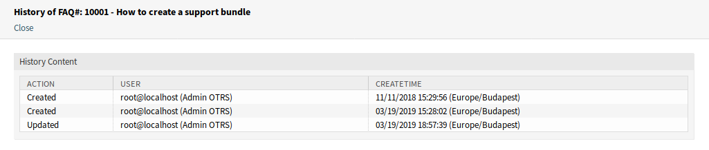
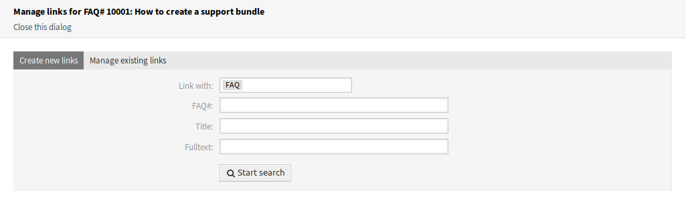
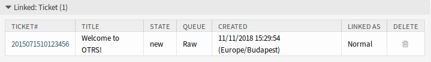

FAQ详情¶
使用此屏幕可查看FAQ文章的详细信息。 如果您在任何其他屏幕上点击FAQ文章，则可以使用 FAQ详情 屏幕。

FAQ详情屏幕
此屏幕有一个自己的菜单并包含几个小部件。
FAQ内容¶
FAQ详情 屏幕有一个自己的菜单。
- 后退
- 此菜单项返回上一屏幕。
- 编辑
此菜单项打开一个新窗口以编辑FAQ文章。

编辑FAQ屏幕
- 历史
此菜单项打开一个新窗口以查看FAQ文章的历史记录。
FAQ历史记录屏幕
- 打印
- 此菜单项打开一个PDF文件，显示此屏幕适合打印机的版本。 您可以保存或打印此PDF文件。
- 链接
此菜单项打开 OTRS 的标准链接屏幕。 FAQ文章可以链接到其它FAQ文章或工单。 现有链接也可以在这里管理。
链接FAQ屏幕
- 删除
使用此菜单项删除FAQ文章。

删除FAQ对话框
症状、问题、解决方案 和 注释 小部件显示FAQ文章的内容。
可以在 评分 小部件中对FAQ文章进行评级，确认FAQ文章是否有用。 要为FAQ文章评分，请单击此小部件中的 是 或 否 按钮。
任何用户只能对 FAQ 文章评分一次。 正面和负面评分的数量将显示在右侧边栏中。
FAQ侧边栏小部件¶
以下小部件位于右侧边栏。
FAQ信息 小部件列出了FAQ文章的所有相关属性。

FAQ信息 小部件
FAQ文章可以链接到其它对象。 使用此小部件可以查看FAQ文章与其它对象之间的链接。

链接对象 小部件
可以通过 FAQ详情 菜单的 链接 菜单项添加新链接。 现有的链接也可以在那里管理。
若要查看链接对象详细信息，请单击此小部件中的条目。
参见
将 LinkObject::ViewMode 设置为 复杂 以显示有关链接对象的详细信息。

复杂链接对象 小部件